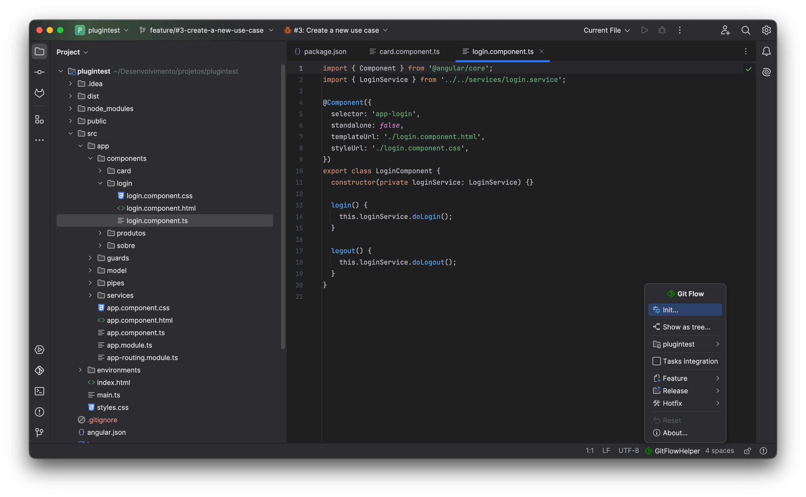
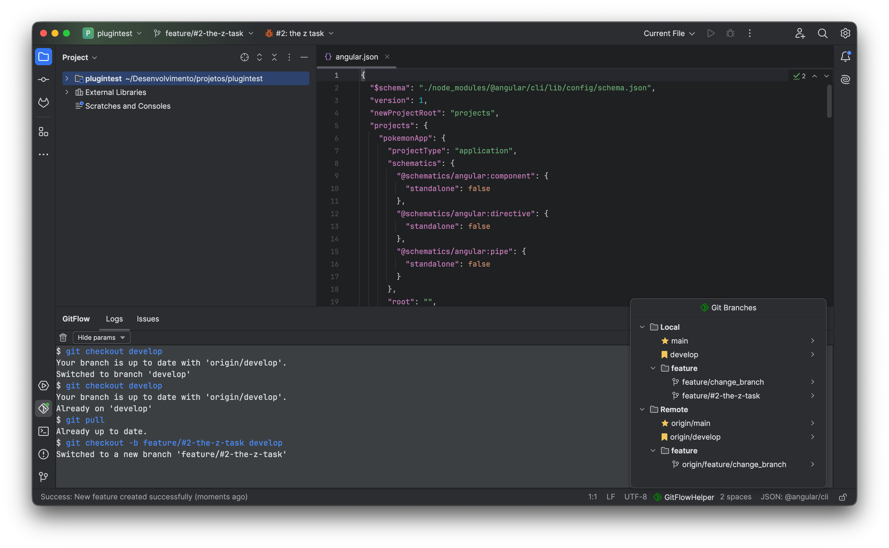

Execute full Vincent Driessen Git Flow lifecycle directly inside IntelliJ IDEA, Android Studio, and WebStorm. No CLI tools required. Zero friction, complete safety guardrails, and deep issue tracker integration.

Everything you need for strict Git Flow compliance without ever leaving your IDE or typing repetitive terminal commands.
No external Git Flow CLI binaries required. Works seamlessly through IntelliJ Platform's asynchronous Git4Idea engine with instant feedback and zero latency.
Learn about Git Flow model →
Never let features fall behind. Real-time status bar badge (⬇ N) counts how many commits you are behind develop, with instant 1-click automatic synchronization.
Full visibility at your fingertips: Execution Logs with custom typography, rich Issues inspector, interactive visual branch Flow graph, and Jenkins CI/CD monitoring.
Explore the 4 Tool Window tabs →Directly integrates with Jira Software, GitHub Issues, GitLab Issues, and Redmine. Automatically generates sanitized branch names and updates status to In Progress.
View issue tracker setup →
Blocks accidental direct commits to main and develop. Detects uncommitted changes and divergence before allowing branch completion.
Trigger builds and monitor live console output streaming with smart ANSI coloring without switching to an external browser tab.
Monitor CI/CD pipelines →Browse dedicated guides for workflows, the 4-tab tool window, third-party integrations, and safety rules.
Understand how GitFlow Helper manages Feature branches, Release stabilization, Hotfix patching, merge-requests to GitLab, squash merges, and the real-time Divergence Indicator.
Step through the Logs tab (with customizable typography and multi-repo tagging), Issues tab, the visual interactive Flow graph, and Jenkins build tracking.
Step-by-step setup for Jira, GitHub, GitLab, and Redmine integration. Configure Jenkins pipeline triggers and monitor builds directly inside your IDE.
Commit interception checks, dirty working tree scanners, divergence blockers, plus a complete searchable cheatsheet of keyboard shortcuts for macOS and Windows.
Navigate complex repositories with speed. Filter branches instantly with Speed Search, switch checkouts with one click, and manage local or remote branches effortlessly.
